Префектура Нагасаки · Синкамигото · острова и еда
Синкамигото: удон на масле камелии, соль на дровах и церкви у моря
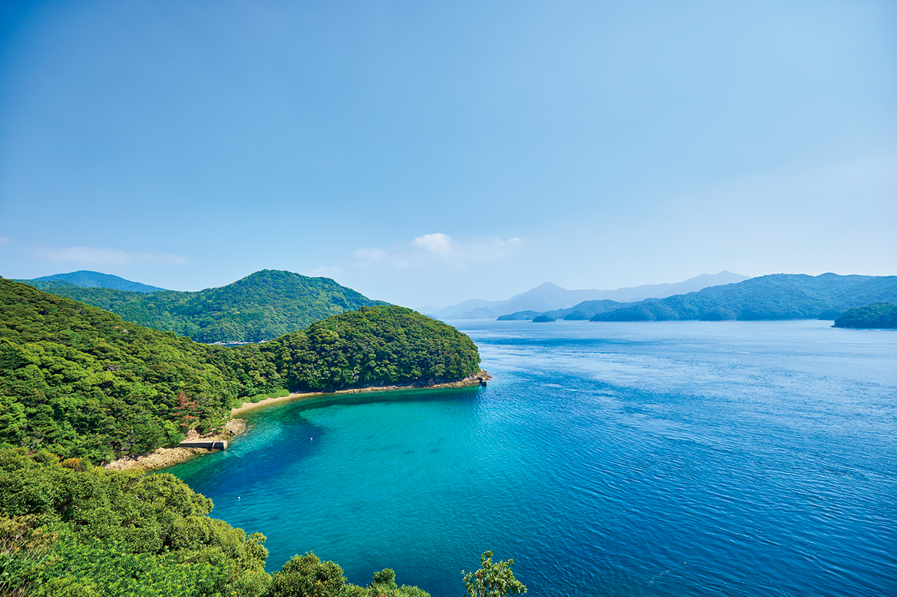
У префектуры Нагасаки самая длинная береговая линия в Японии, и особенно затейливо она изрезана у островов Гото. Начинаем путешествие с Синкамигото, острова в форме креста: здесь едят удон на масле камелии, варят соль на дровах и молятся в церквях у самой воды.
Острова
Архипелаг из ста пятидесяти островов
Острова Гото лежат к западу от префектуры Нагасаки. Это около 150 островов, главные из них пять, в том числе Фукуэ и Накадори, и большая часть архипелага входит в национальный парк Сайкай. Берега здесь изрезаны, как в риасовых бухтах: обрывистые скалы сменяются пляжами с белым песком, а над водой стоят около 50 церквей, часть которых внесена в список Всемирного наследия.
От порта Нагасаки до Синкамигото на скоростном судне около 1 часа 15 минут. Путь начинается с Синкамигото, который за его очертания называют островом креста.
Удон
«Мэнс Хамасаки»: удон Гото у первоисточника
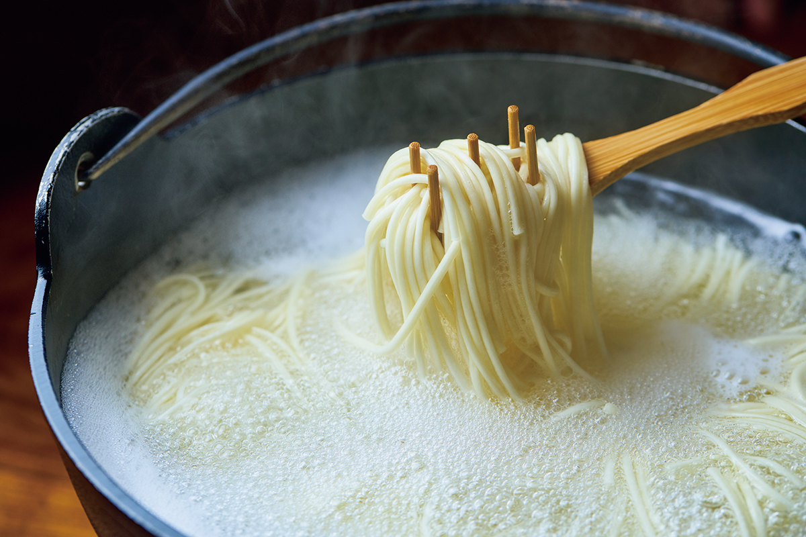
Первое, что стоит попробовать на острове, это удон Гото. Его причисляют к трём великим удонам Японии, а корни рецепта, по преданию, ведут в Китай: технологию будто бы привезли японские посольства, которые в VII–IX веках плавали ко двору династии Тан. Тонкую лапшу тянут вручную, смазывая маслом камелии, которая растёт по всем островам Гото, и она получается гибкой и упругой одновременно.
Самый народный способ есть удон Гото называется «дзигоку-даки», то есть «адская варка». Лапшу варят в котле и вылавливают прямо оттуда, макая в бульон из жареной летучей рыбы аго или в соевый соус с сырым яйцом. Так на островах едят с давних пор.
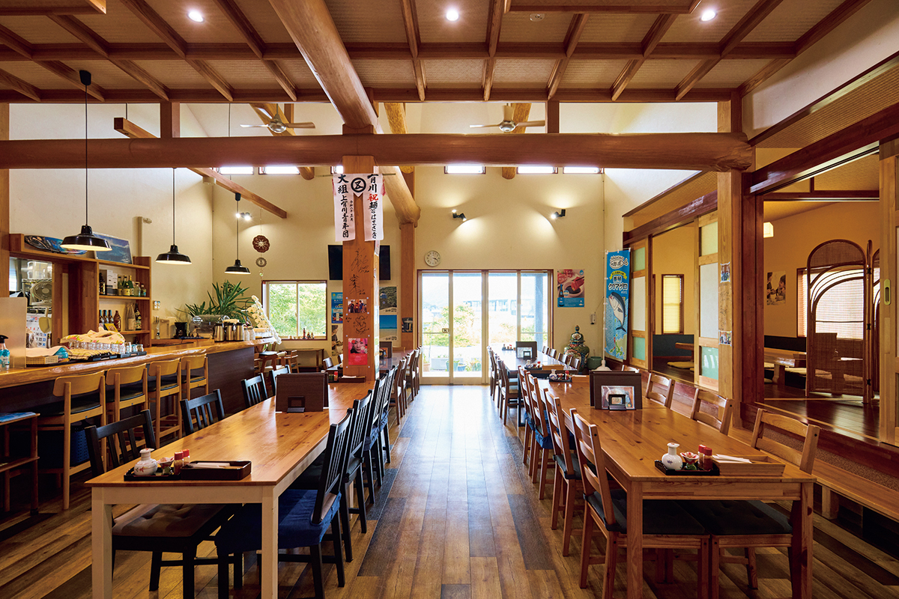
«Мэнс Хамасаки» работает при лапшичной фабрике «Хамасаки сэймэндзё», и сегодня дело ведут братья, четвёртое поколение семьи. В меню разные варианты удона Гото: от набэяки, удона в горячем глиняном горшке, до холодного дзару-удона из выдержанной лапши «Кадзэ-но хама». Здесь же продают десять видов лапши, которые придумал предыдущий хозяин, большой любитель экспериментов.
«Мэнс Хамасаки»
- Адрес
- префектура Нагасаки, уезд Минамимацуура, Синкамигото, Арикава-го, 2427-16
- Телефон
- +81 959-42-3388
- Часы работы
- 11:00–14:00
- Выходные
- воскресенье
Соль
«Ягатамэ-но сио хомпо»: соль, сваренная на дровах
Без соли нет и удона, поэтому следующая остановка у бухты Нама. Над её входом стоит Ягатамэ, огромная скала причудливой формы, по которой когда-то ориентировались корабли. Рядом с ней работает солеварня «Ягатамэ-но сио хомпо», где соль по-прежнему выпаривают в плоских котлах.
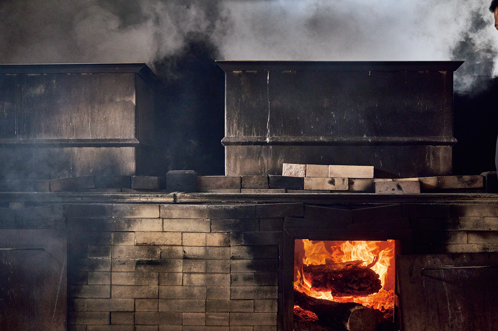
В бухту заходят воды тёплого течения Куросио и Цусимского течения. Морскую воду качают каждый день, и супруги, которые ведут солеварню, выпаривают её по способу, унаследованному от деда. Топят печь дровами из островных лесов, которые прореживают ради их здоровья. Солевары объясняют, что дровяной жар с его инфракрасным излучением делает соль мягче на вкус. В кухне острова эта соль играет незаметную, но важную роль.
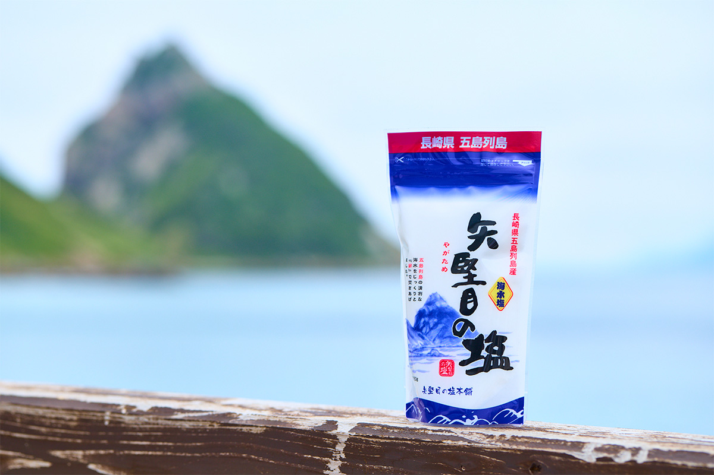
«Ягатамэ-но сио хомпо»
- Адрес
- префектура Нагасаки, уезд Минамимацуура, Синкамигото, Амиагэ-го, 688-7
- Телефон
- +81 959-53-1007
- Часы работы
- 9:00–17:00
- Выходные
- нерегулярно
- Сайт
- yagatame.jp
Круиз
Пролив Вакамацу и пещера тайных христиан
От соли к морю, которое её даёт. В проливе Вакамацу самая сложная береговая линия на всём архипелаге: десятки островков, мысов и бухт. Сюда стекают питательные вещества с гор, вода прозрачная, изумрудная, и сквозь неё видны столовые кораллы. По проливу ходит катер «Гото Синко круиз».
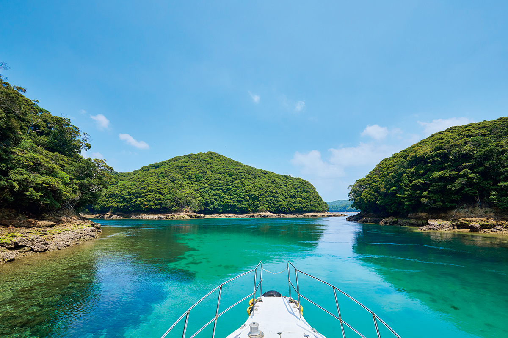
Катер подходит к пещере, скрытой в глубине скал. В ней прятались тайные христиане (сэмпуку кириситан), которые после запрета христианства в Японии веками хранили веру тайно. Попасть сюда можно только по воде, и место считается святым. Если позволяет погода, можно спуститься по камням и пройти в пещеру.
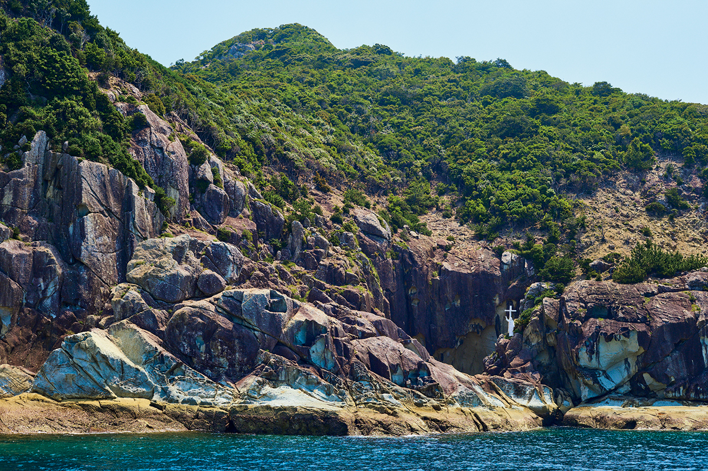
Маршруты придумали супруги-владельцы, сами уроженцы этих мест. Помимо видов, в программе кормление тунца на рыбоводной ферме и рассказ о том, как люди жили здесь и как сохраняли веру. Часть выручки идёт на охрану местных церквей. В 2026 году базовая прогулка на 90–120 минут стоила от 10 000 иен для взрослых и от 7000 иен для школьников младших классов.
«Гото Синко круиз» (круиз по проливу Вакамацу)
- Адрес
- префектура Нагасаки, уезд Минамимацуура, Синкамигото, Вакамацу-го, 160-36 (терминал порта Вакамацу)
- Телефон
- +81 80-2156-0510
- Часы работы
- отправления в 9:00, 13:00 и 15:00
- Выходные
- нерегулярно
- Цены / Вход
- базовый план 90–120 минут, взрослые от 10 000 иен, школьники младших классов от 7000 иен
Ремесло
KI-HARU: ложки из камелии
Камелия на Гото не только цветок и масло. Она хорошо держит морской ветер, и её сажают как ветрозащитную полосу. Древесину, которая остаётся при уходе за деревьями, использует мастерская KI-HARU. У камелии плотная и прочная древесина: после шлифовки она становится гладкой и очень приятной на ощупь.
Мастер по дереву делает из обрезков камелии посуду и столовые приборы, и так у острова появился новый местный продукт. Больше всего спрашивают ложки и палочки для еды. Кроме камелии в ход идут и другие островные деревья, например мелия, а всего в лавке около 30 разных изделий.
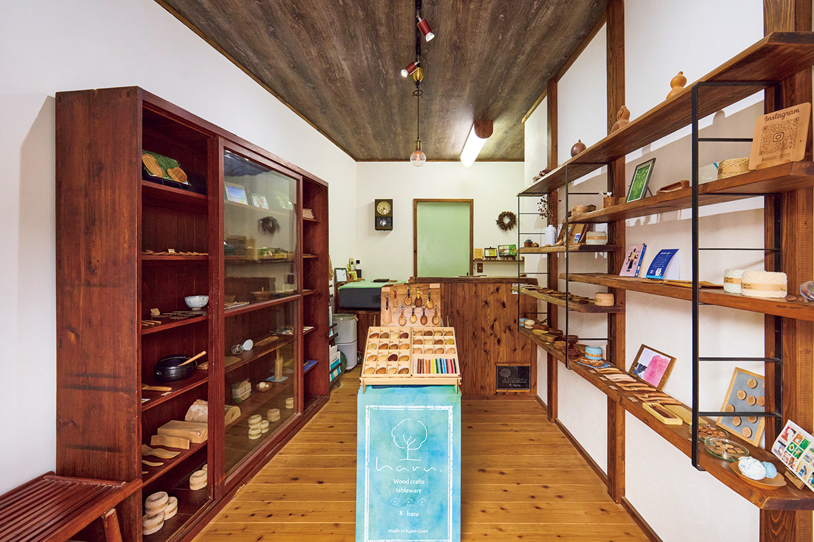
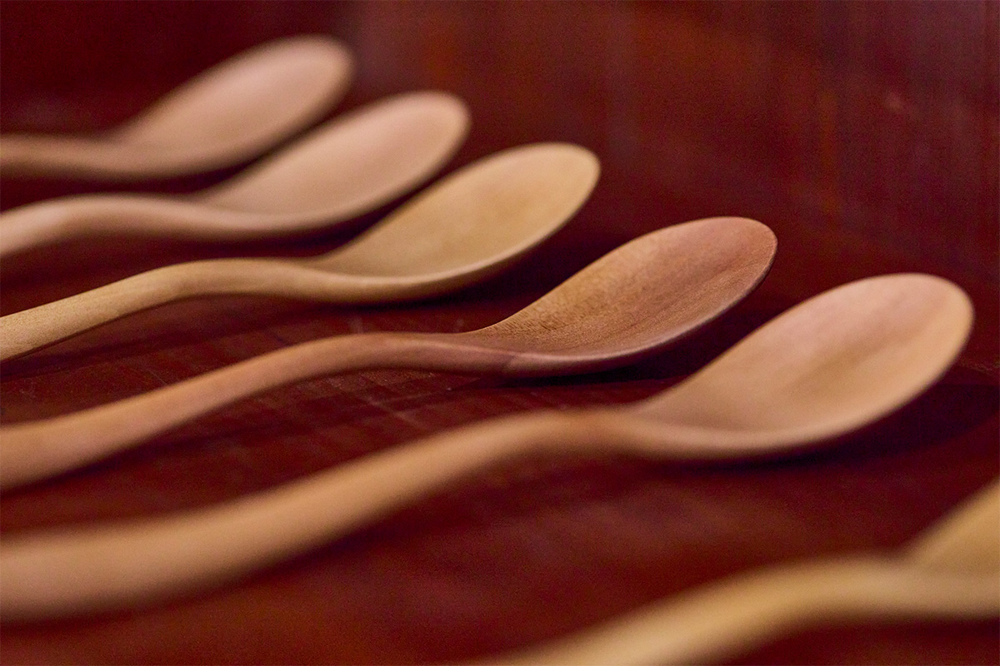
KI-HARU
- Адрес
- префектура Нагасаки, уезд Минамимацуура, Синкамигото, Маруо-го, 784
- Часы работы
- 10:00–16:00
- Выходные
- с понедельника по пятницу
- Сайт
- ki-haru.com
Отель
Margherita: двадцать девять номеров по числу церквей
На ночь мы остановились в отеле Margherita на холме над морем. Здание задумано как корабль, а номеров в нём 29, ровно столько, сколько церквей в районе Камигото. С открытой медитационной террасы, которую продувает ветер, и из номеров видно море.
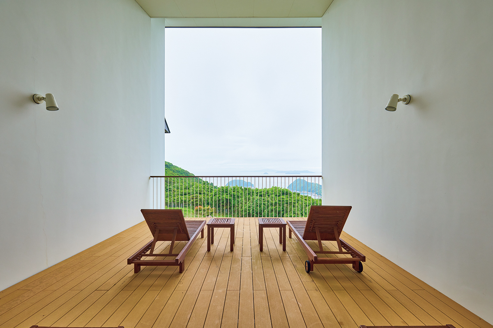
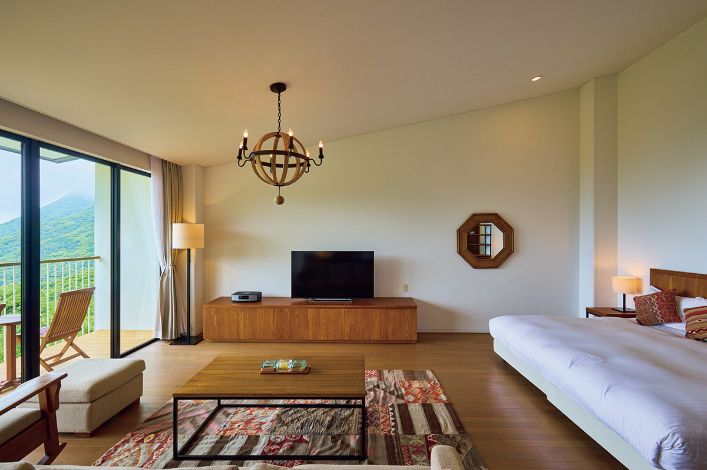
На ужин здесь итальянская кухня, и задача у поваров понятная: показать вкус Синкамигото, где рыбы особенно много видов. Море, на которое смотришь днём, вечером оказывается на тарелке, и ужинать можно, глядя на закат. Ночь с ужином и завтраком в 2026 году стоила от 25 300 иен, включая налог и сервисный сбор.
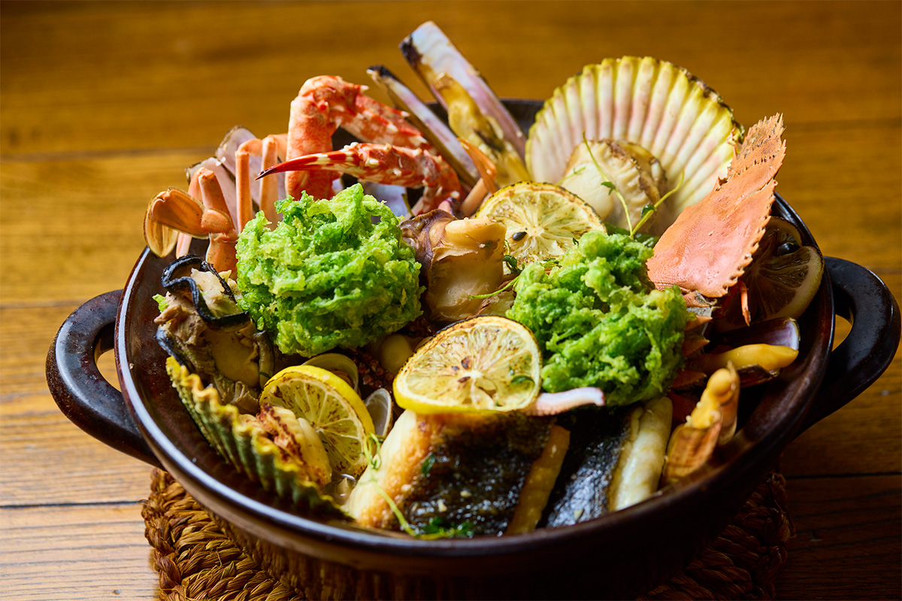
Margherita
- Адрес
- префектура Нагасаки, уезд Минамимацуура, Синкамигото, Огуси-го, 1074
- Телефон
- +81 959-55-3100
- Номера
- 29
- Цены / Вход
- от 25 300 иен за ночь с ужином и завтраком, включая налог и сервисный сбор
- Заезд / выезд
- 15:00 / 10:00
- Как добраться
- на машине около 30 минут от портов Арикава и Тайноура, около 60 минут от порта Нарао
Рынок
Утренние торги в маленьком порту
Утром стоит встать пораньше и пройтись до порта. В рыболовецком порту идут торги, звучат громкие голоса, и туристы могут посмотреть на всё это вблизи. Аукционист бодро зазывает: «Мадай, додай!», что значит «Морской карась мадай, как вам?», и по-японски это звучит как каламбур. Таблички с ценой покупки летают от одного участника к другому. Отдельное зрелище, как ловко сотрудники кооператива забивают рыбу, чтобы она дольше оставалась свежей.
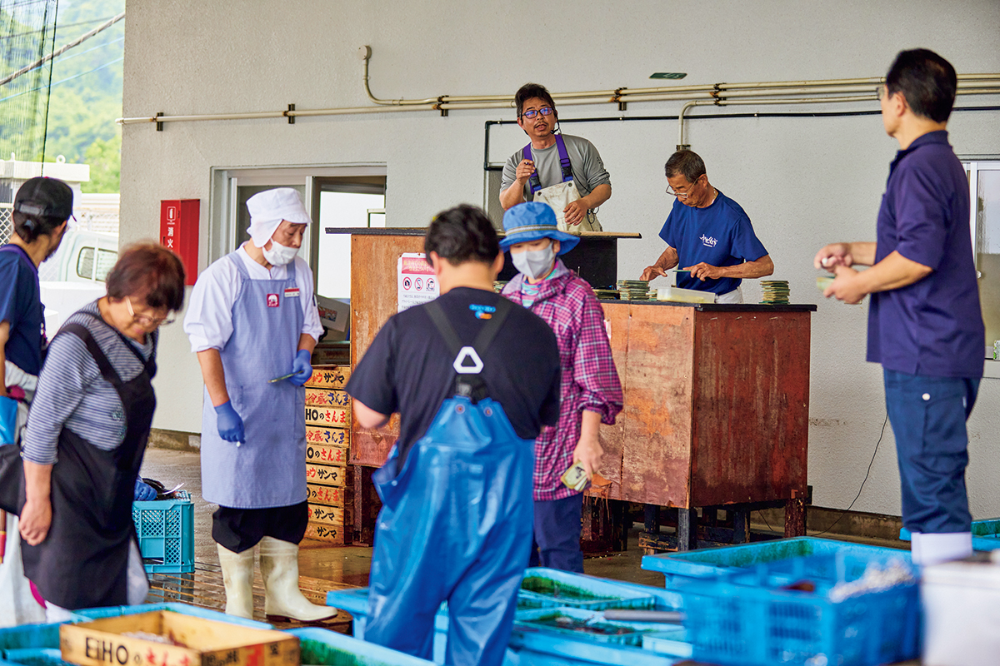
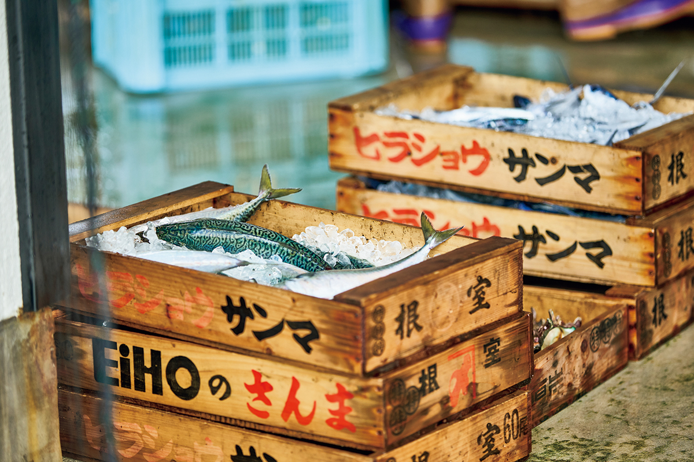
Рыболовецкий кооператив Камигото
- Адрес
- префектура Нагасаки, уезд Минамимацуура, Синкамигото, Аоката-го, 2273
- Телефон
- +81 959-52-2008 (о посещении утренних торгов нужно договориться заранее)
Церкви
Острова молитвы
После рынка едем по церквям. Христианство пришло на Гото из-за моря и укоренилось здесь, пережив века гонений. Церкви стоят у самой воды, лицом к синему морю, и по ним сразу понятно, почему Гото называют островами молитвы.
Наканоура и Осо
Белая церковь Наканоура стоит в тихой бухте. В ясный день с противоположного берега видно, как она целиком отражается в воде, поэтому её называют ещё «церковью водного зеркала».
Церковь Осо стоит на возвышении в деревне Осо, откуда открывается вид на море. Витражи для неё сделаны в Западной Германии, а кирпич привезли из Сасэбо. Самое запоминающееся в ней это узоры, выложенные выступами и впадинами кирпичной кладки.
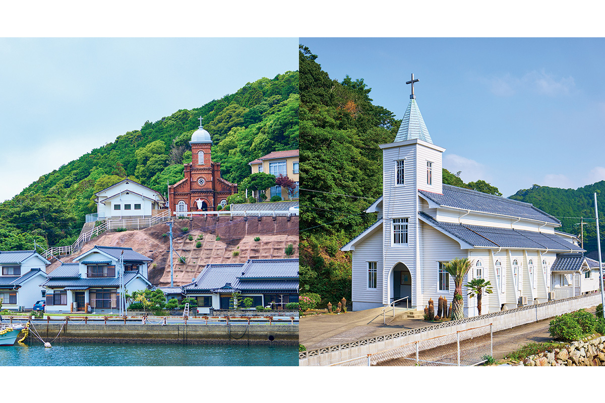
Касирагасима и Аосагаура
Церковь Касирагасима прихожане сложили сами из местного песчаника, и каменных церквей такого рода в Японии очень мало. Её крыша с куполом покрыта медными листами, а интерьер украшен цветочными мотивами.
Церковь Аосагаура построена в строгом классическом церковном стиле. Это одна из ранних кирпичных церквей Ёсукэ Тэцукавы. Нынешнее здание уже третье на этом месте, и освятили его больше 110 лет назад.
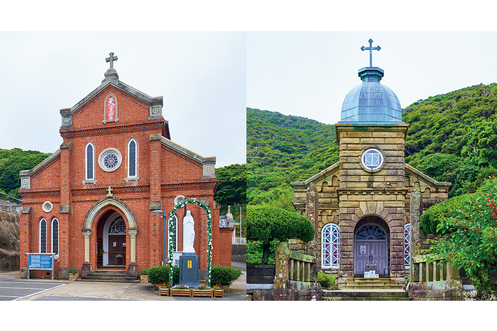
Церковь Наканоура
- Адрес
- префектура Нагасаки, уезд Минамимацуура, Синкамигото, Сюкуноура-го, Наканоура
- Выходные
- уточнять заранее (во время месс, свадеб и похорон осмотр может быть закрыт)
- Цены / Вход
- бесплатно
Церковь Осо
- Адрес
- префектура Нагасаки, уезд Минамимацуура, Синкамигото, Аоката-го, 2151-2
- Выходные
- уточнять заранее (во время месс, свадеб и похорон осмотр может быть закрыт)
- Цены / Вход
- бесплатно
Церковь Касирагасима
- Адрес
- префектура Нагасаки, уезд Минамимацуура, Синкамигото, Томосуми-го, Касирагасима, 638
- Телефон
- +81 95-823-7650 (о посещении нужно сообщить заранее)
- Выходные
- уточнять заранее (во время месс, свадеб и похорон осмотр может быть закрыт)
- Цены / Вход
- бесплатно
- Сайт
- kyoukaigun.jp
Церковь Аосагаура
- Адрес
- префектура Нагасаки, уезд Минамимацуура, Синкамигото, Нама-го, 1241
- Выходные
- осмотр внутри только в пятницу, субботу и воскресенье
- Цены / Вход
- бесплатно
Фото: Косаку Китадзима.